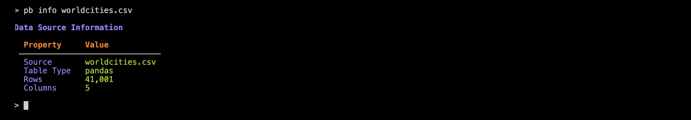
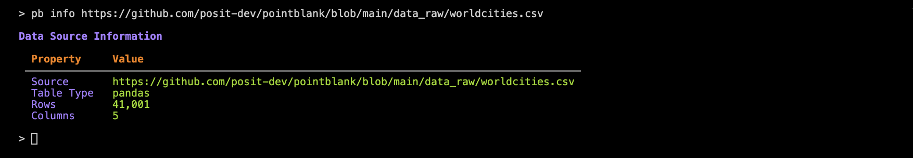
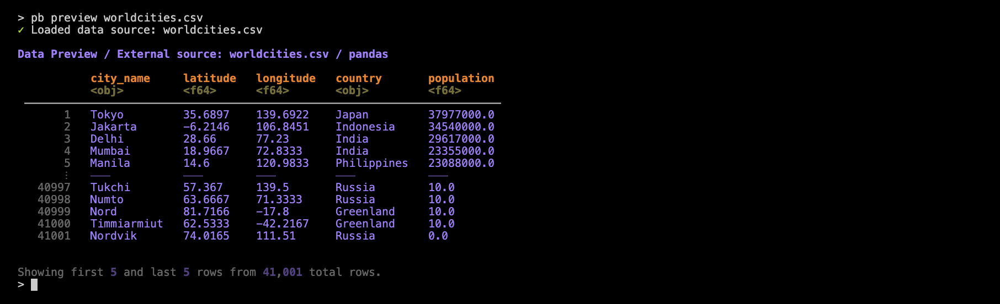
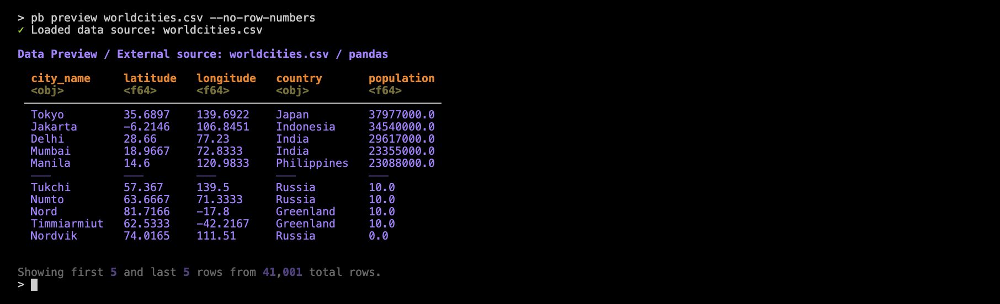
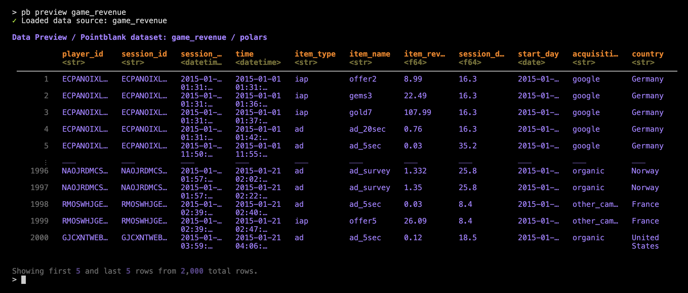
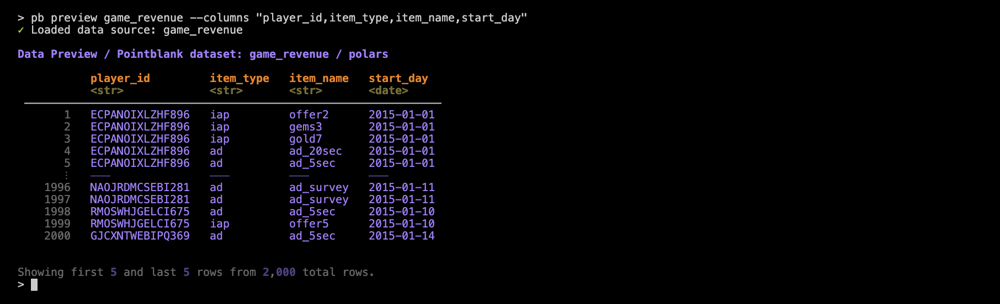
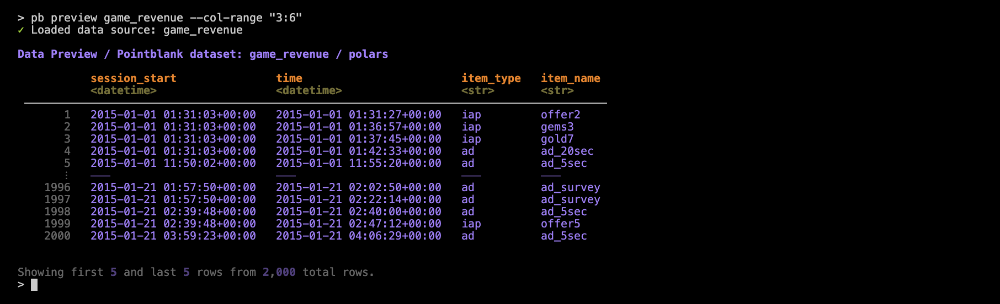
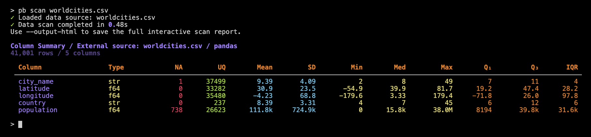
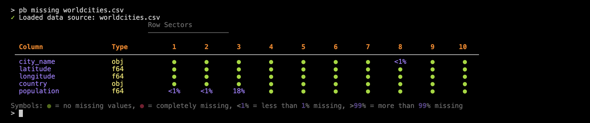

Data Inspection
Pointblank’s CLI (pb) makes it easy to view your data before running validations. It has several commands that are exceedingly useful for understanding your data’s structure, checking for obvious issues, and confirming that your data source is being read correctly. We also make it easy to explore data in various formats and locations. Let’s go through each of the commands for inspecting and exploring data.
pb info: Inspecting the Data Structure
Use pb info to display basic information about your data source. Here’s how this works with a local CSV file:
pb info worldcities.csv
This command shows the (1) table type (e.g., pandas, polars, etc.), (2) the number of rows and columns, and (3) the data source path or identifier.
That example used a local CSV file. The same file is also present in Pointblank’s GitHub repository (in the data-raw directory) and the CLI is able to load the data from there as well:
pb info https://github.com/posit-dev/pointblank/blob/main/data_raw/worldcities.csv
The pb info command is useful before running validations to confirm your data source’s dimensions, and, whether it can even be loaded.
You can inspect a wide variety of data sources using the CLI! Here are some examples with pb info:
pb info small_table # built in dataset
pb info worldcities.csv # single CSV file
pb info meteo.parquet # single Parquet file
pb info "*.parquet" # several Parquet files
pb info "data/*.parquet" # partitioned Parquet files
pb info "duckdb:///warehouse/analytics.ddb::customer_metrics" # DB table via connection string
pb info https://github.com/posit-dev/pointblank/blob/main/data_raw/global_sales.csv # GitHub URLAnd these input schemes work with all other commands that accept a DATA_SOURCE.
pb preview: Previewing Data
Use pb preview to view the first and last rows of your data. Let’s try it out with the worldcities.csv file:
pb preview worldcities.csv
As can be seen, pb preview gives you a preview of the dataset as a table in the console. The dataset has 41K rows but we’re electing to show only five rows from the head and from the tail.
Let’s go over some features of the table preview. First off, the table header provides information on the data source and the DataFrame library that handled the reading of the CSV. Below the column names are simplified representations of the data types (e.g., <obj> for object, <f64> for Float64). We provide row numbers (in gray) in the table stub to indicate which of the rows are from the head or the tail (and a divider helps to distinguish these row groups). If you’d prefer to eliminate the row numbers, use the --no-row-numbers option:
pb preview worldcities.csv --no-row-numbers
While pb preview purposefully displays only a few rows, the number of columns shown can be more than you might need. Furthermore, if a table has a lot of columns, you’ll only see some of the first and some of the last columns. This is where column selection becomes useful and there are a few methods available for subsetting the preview table’s columns. A good one (provided you know the column names) is to use the --columns option along with a comma-delimted set of column names. Let’s look at a preview of the included game_revenue dataset before subsetting the columns:
pb preview game_revenue
That’s 11 columns in total and while the all columns are shown (i.e., none in the middle are truncated from view), we start to see some necessary instances of abbreviating via … within the column names and in the displayed values.
Let’s now use the --columns with a set of column names:
pb preview game_revenue -columns "player_id, item_type, item_name, start_day"
With that, the few columns that are displayed no longer have to abbreviate their data values. This is an important consideration since a selective display of column becomes more necessary if column content is large or if the width of the terminal (in terms of characters) cannot be increased.
You may want to view ranges of columns by their indices. This is convenient when you want to get a closer look at a few side-by-side columns and you don’t want to bother with getting the set of column names exactly right (i.e., for quick inspection). For this, we need to use the --col-range option with the desired left/right column bounds separated by a colon:
pb preview game_revenue —-col-range "3:6"
In the case that you want to save a table preview as an HTML table in a standalone file, you can add in the --output-html option (just add a path/filename with an .html extension).
And there are many more options that allow for quick iteration while previewing a table. Use pb preview --help to get a helpful listing.
pb scan: Getting Column Summaries
We can use pb scan for fairly comprehensive summaries of column data, including:
- data types
- missing value counts
- unique value counts
- summary statistics (mean, standard deviation, min, max, quartiles, and the interquartile range)
Let’s use this on the worldcities.csv dataset:
pb scan worldcities.csv
Each row in the summary table represents a column in the input dataset. Just as in pb preview we get simplified dtypes (in the Type column). The NA and UQ indicate how many missing and unique values are in the column. The remaining columns are statistical measures and there’s an important thing to note here: the values provided for any string-based columns (here, city_name and country) are derived from string lengths.
When using pb scan, it’s helpful to know that large numbers in the summary table are automatically abbreviated for readability, so you’ll see values like 39.8k or 38.0M instead of long numbers that would require many more characters. For the best experience, try to use a terminal window that’s at least 150 characters wide. This will help ensure that all column values are fully visible and not adversely abbreviated by the underlying table mechanism.
If your table has many columns, that’s not much of a problem for the reporting! Each column is represented as a row in the report, so you’ll simply see more lines in the output (and you could always limit the number of columns reported).
There are two options for pb scan:
--columns "col1,col2": scan only specified columns--output-html "file.html": save scan as an HTML file
Both of these options are also in the pb preview command and they behave the same way here.
pb missing: Reporting on Missing Values
Use pb missing to generate a missing values report, visualizing missingness across columns and 10 row sectors. Here’s an example using worldcities.csv:
pb missing worldcities.csv
This report is arranged similarly to that of pb scan, where each column in the input table gets a row in this report table. Each of the 10 row sectors represents 1/10 of the rows in the dataset, where sector 1 encompasses the head of the table, and 10 the tail.
More often than not, we expect few missing values so a filled green circle signifies that the collection of rows in a sector (for a column) has no missing values. We don’t see any red circles in the worldcities.csv-based example but, if we did, that would mean that sectors for a given column are entirely filled with missing values.
What’s in between the no-missing and completely-missing cases are percentages of missing values. For instance, we can see that row sector 3 of the population column has 18% missing values (which is very odd for a table with the sole purpose of providing population values).
We also have cases where we see <1% of values in a row sector missing. The reporting of pb missing is very careful not to ‘round down’ in cases where there could be very few missing values (or even just one) in a large table.
Seeing this type of missing value report can be really important! You might not expect any missing values but finding them will inform decisions on whether to institute checks for them. Another case is that missing values will pop up in specific sectors, indicating a change in how data is processed and appended to the table.
By way of options, there’s only one for pb missing and it is --output-html. With that (as in the previous two commands discussed), we can write the missing values report to a standalone HTML file.
Wrapping Up
Pointblank’s CLI provides a set of commands that make it easy to inspect, understand, and diagnose your data before you move on to validation or analysis. Using these tools can help you catch issues early and gain confidence in your data sources.
- use
pb infoand before running validations to confirm your data source can be loaded - use
pb previewto quickly understand what the data looks like - use
pb scanfor a quick data profile and to spot outliers or data quality issues - use
pb missingto visualize and diagnose missing data patterns
By incorporating these commands into your workflow, you’ll be better equipped to work efficiently with your data (and avoid surprises down the line).